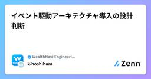

WealthNavi Engineering Blogのフィード
https://zenn.dev/p/wn_engineering
ウェルスナビの開発に関する記事を定期的に発信しています。 「ものづくりする金融機関」への取り組みを知っていただければ幸いです。
フィード

イベント駆動アーキテクチャ導入の設計判断 4
4
WealthNavi Engineering Blogのフィード
この記事はウェルスナビ 2026年6月テックブログ企画「選択の物語：金融サービスのシステム設計判断をひもとく」の特集記事です。 はじめにこんにちは、ウェルスナビでバックエンドエンジニアを担当している星原です。ウェルスナビのバックエンドは複数のマイクロサービスで構成されています。サービス間の連携をどう設計するかは、障害耐性・スケーラビリティ・開発のしやすさに直結する重要な判断です。本記事では、サービス間連携にイベント駆動アーキテクチャを採用するにあたって直面した4つの設計判断を紹介します。「なぜその選択をしたのか」というトレードオフの観点を中心に解説します。実装の詳細につ...
4日前

Astro移行によるコンテンツ配信・マーケティング基盤の強化
WealthNavi Engineering Blogのフィード
この記事はウェルスナビ 2026年6月テックブログ企画「選択の物語：金融サービスのシステム設計判断をひもとく」の特集記事です。こんにちは。マーケティング開発チームの高野です。マーケティング開発チームは、マーケティング施策を支えるシステムの開発・運用から新規事業の開発まで、幅広い領域を担当しています。フロントエンド・バックエンド開発に加え、クラウドサービスを活用した業務システムや運用自動化システムの設計・開発も行っています。私は主に、運用改善プロジェクトや新規事業における開発管理を担当しています。今回は、弊社で運用しているコンテンツサイトのAstro移行についてお話ししま...
9日前
解約者向け電子交付サービスの開発について
WealthNavi Engineering Blogのフィード
この記事はウェルスナビ 2026年6月テックブログ企画「選択の物語：金融サービスのシステム設計判断をひもとく」の特集記事です。 はじめにロボアド開発グループ サービス機能開発チームのユダです。ロボアドバイザー（ロボアド）のサービスサイトとスマホアプリ用のAPIの開発をしているエンジニアです。以前の投稿、金融知識を学びながらの開発：新NISA機能拡充では、ロボアドユーザの皆さんにご利用いただいているおまかせNISA機能の拡充についてお話しさせていただきました。今回は少し違う視点から、ロボアドサービスを解約したユーザでも利用できる、解約者向け電子交付サービスの開発技術選定につ...
14日前
ECSマネージドインスタンスを社内初導入した際の設計判断
WealthNavi Engineering Blogのフィード
この記事はウェルスナビ 2026年6月テックブログ企画「選択の物語：金融サービスのシステム設計判断をひもとく」の特集記事です。 はじめに2025年に新卒としてシステム基盤チームに入り、SRE業務を行っている吉田です。本記事では、バッチ実行基盤の起動タイプをFargateからECSマネージドインスタンスへ移行の中で直面した「起動タイプの選定」「タスク配置の競合への対処」「インスタンス削除猶予時間」というさまざまな設計判断について、優先すべき要件とトレードオフを整理しながら紹介します。 背景社内プロダクトでECSを利用する場合、運用負荷の小ささからFargateを標準起動...
21日前
「選択の物語」特集、はじまります
WealthNavi Engineering Blogのフィード
はじめにこんにちは、ウェルスナビのエンジニアリングエンゲージメントチームの遠藤です。WealthNavi Engineering Blogでは、6月のブログ企画として 「選択の物語：金融サービスのシステム設計判断をひもとく」 と題した特集をお届けします。 企画概要ウェルスナビのエンジニアが日々の開発の中で行っている設計や技術選定について、 なぜその選択に至ったのかを具体的にお伝えする記事を集めた企画となります。ウェルスナビでは、お客様の大切な資産を扱う金融サービスを開発するにあたり、品質や安全性を大前提に、価値を素早く届けるための判断を大切にしています。フロントエンド、...
1ヶ月前
ウェルスナビはTSKaigi 2026およびJJUG CCC 2026 Springに協賛します
WealthNavi Engineering Blogのフィード
こんにちは、ウェルスナビのエンジニアリングエンゲージメントチームの遠藤です。ウェルスナビは、5/22（金）〜23（土）にかけて開催の「TSKaigi 2026」と、5/30（土）開催の「JJUG CCC 2026 Spring」に協賛します。両イベントとも、スポンサーとしてセッション登壇ならびにブース出展を行います。 TSKaigi 2026TSKaigiは、TypeScriptに関する幅広いテーマを扱う国内最大級の技術カンファレンスです。https://2026.tskaigi.org/ウェルスナビはPlatinumスポンサーとして協賛します。 登壇情報（スポンサーセ...
1ヶ月前
【開催レポート】ウェルスナビ ハッカソン 2026 Winter 〜AIのAPIを組み込んだプロダクト開発に挑戦！〜
WealthNavi Engineering Blogのフィード
みなさん、こんにちは！ウェルスナビ Engineering Engagementチーム（以降、EEチーム）の星野です！私が所属しているEEチームは、「『ものづくりする金融機関』を実現する開発組織の構築と強化」をミッションに掲げ、組織力を最大化するための組織開発や技術広報の企画・運営、組織横断事務を行っているチームです。また、開発組織に所属する社員が、技術的な学びを深めるためのハッカソンのような社内イベントも企画・運営しています。今回は、2月末に行った社内ハッカソンの様子をお届けします。 ハッカソンの目的とテーマ 目的他チームメンバーとのコミュニケーションのきっかけを作る...
3ヶ月前
パスキー導入奮闘記 〜Android WebViewの壁と、Auth0 SDKへ方針転換するまで〜
WealthNavi Engineering Blogのフィード
はじめにこんにちは、Androidエンジニアの佐藤です。ウェルスナビでは昨年9月にパスキーによる認証を導入しました。今回はその背景と、導入時に直面した問題、どのように調査・検証を進めたか、そして最終的にどのような方針で解決したかをまとめました。⚠️ 注意事項この記事内のドメイン名、パッケージ名、エラーメッセージの一部は、セキュリティ上の理由から実際のものとは変更しています。技術的な内容や問題解決の流れには影響ありません。 この記事の対象読者モバイルアプリでパスキー導入を検討しているエンジニアAndroid WebViewでの認証実装に限界を感じている、または...
3ヶ月前
ウェルスナビのiOSアプリのデザインシステムとデザイナー連携の取り組み
WealthNavi Engineering Blogのフィード
はじめにこんにちは、サービス機能開発チーム・iOSエンジニアの深来です。ウェルスナビのiOS・Androidの正社員の人数が増えており、モバイルチーム特集の企画として計6名全員での記事の執筆ができることに喜びを感じる今日この頃です。私からは、デザイナーとモバイルエンジニア対象のイベントである五反田.mobile Vol.2 - モバイルアプリデザイン最前線で登壇した内容と関連して、ウェルスナビのiOSアプリのデザインシステムとデザイナー連携の取り組みについて紹介します。 デザインシステムとはそもそもデザインシステムとは、任意のアプリケーションを組み立てるのに用いる再利用可...
3ヶ月前
ウェルスナビアプリでのtargetSDK36対応について
WealthNavi Engineering Blogのフィード
1. はじめにこんにちは、サービス機能開発チーム Androidエンジニアの佐野です。2025年11月中旬にウェルスナビへ入社し、Androidアプリ開発を進めています。今回はウェルスナビアプリをtargetSDK 36にアップデートした件について、何をしたのか、どのように進めたのかを紹介します。 2. 対応の背景本対応では「targetSDK 36へのアップデートを完了させ、今後変更されるであろうストア要件に事前に対応すること」を最優先事項として置き、動作確認・対応を進めることにしました。 Google Playの要件への対応Google Play では、新規ア...
4ヶ月前
モバイルアプリ開発における共通ファイルを集中管理する
WealthNavi Engineering Blogのフィード
はじめに複数のモバイルアプリを開発・運用していると、各リポジトリで共通の設定ファイルやテンプレートを管理する必要が出てきます。しかし、これらを個別に管理していると、更新のたびに複数のリポジトリへ同一の変更を加える必要があり、運用コストの増大と更新漏れのリスクが生じます。本記事では、リポジトリを跨いで共通ファイルを集中管理し、GitHub Actionsを活用して配信を自動化した取り組みを紹介します。 背景ウェルスナビのモバイルアプリチームは、昨年9月の時点では少人数体制であり、iOS/Android各プラットフォームごとに担当を分け開発を進めているため、各プラットフォーム...
4ヶ月前
AI時代のモバイル開発 - コーディングエージェントが本気を出せる環境作り
WealthNavi Engineering Blogのフィード
はじめにこんにちは、iOSエンジニアの長です。現在、ウェルスナビのモバイルアプリ開発では、コーディングエージェントを活用しています。この記事では、AI時代におけるモバイル開発の新たな挑戦と、コーディングエージェントが最大限に力を発揮できる環境作りについて共有します。 1. エージェント導入前の状況コーディングエージェント（以下、エージェント）は大変便利です。一方で、既存の開発環境が「エージェント向き」ではないと、良さが出にくいと感じました。私たちの開発で影響が大きかったのは、次の3点です。 巨大で複雑なコードベースアプリは長年の開発の積み重ねで、大規模で複雑なコ...
4ヶ月前
ウェルスナビのモバイルチームのいい文化3選
WealthNavi Engineering Blogのフィード
はじめにみなさん、こんにちは。ウェルスナビでAndroidエンジニアを担当している梅津です。こちらの記事はモバイル特集の最初の記事として、これから紹介される各メンバーの具体的な取り組みに先立ち、ウェルスナビのモバイルチームが作り上げている文化をご紹介することを目的としています。個々の技術選定や開発プロセスの背景にある「文化」を知っていただくことで、後続の記事をより立体的に読んでいただければと思います。ここで言う「文化」とは、金融という制約の強い業界の中でも各メンバーの裁量を大きくしつつ事業やサービスとしての品質を落とさずにプロダクトを顧客へ届けるための考え方や価値基準のこと...
4ヶ月前
「モバイル開発のすべて」特集始まります！
WealthNavi Engineering Blogのフィード
はじめにみなさん、こんにちは！ウェルスナビで技術広報をしている安田です。ウェルスナビのモバイルアプリの開発現場を知ってもらうために、3月のブログ企画として 「モバイル開発のすべて」 特集を開催します！ 企画概要ウェルスナビの運用者数 45万人（2026年1月時点） のうち、8割がモバイルアプリユーザー ということをご存知でしょうか？ある意味お客様と最も近い場所にあり、施策がダイレクトに響きやすいのがモバイルアプリなのです。そんな利用者の多いアプリを開発しているメンバーたちが、それぞれ日々の業務で培った知見や取り組んできたプロジェクトについて記事に書いてくれることになり...
4ヶ月前
PlaywrightをRPAツールとして活用し、事務作業の効率化と安定化を成功させた話
WealthNavi Engineering Blogのフィード
こんにちは、QAの木下です。この記事では、事務作業にRPAツールを導入し、業務の改善に成功した話について、紹介します。 RPA挑戦のきっかけ ソフトウェアテストの自動化で得た知見ウェルスナビのQAチームは、Webサイトやモバイルアプリの品質を保証すべく、テストの計画から分析、設計、実装、実行、完了まで一通りのテスト活動を行っています。またテスト活動の中で、手作業で行っていたテスト実行を自動化し、テスト実行の効率化とともに品質の向上に努めています。特にWebサイトのテスト自動化では、非常に安定かつ高速、低コストにテストを実行できる環境を構築した結果、迅速にWebサイトの欠陥...
4ヶ月前
WireMockを使用した外部接続APIのモック化
WealthNavi Engineering Blogのフィード
はじめにこんにちは、WealthNaviでバックエンドエンジニアを担当しているかるかんです。今回は、外部接続APIをWireMockでモック化した際の備忘録をまとめます。 概要参加しているプロジェクトで、他社が提供するAPI（以下、外部接続APIと呼称）を呼び出す機能の開発がありました。しかし、その外部接続APIはプロダクトの制約上、開発中に自由に呼び出すことができませんでした。しかも、そのAPIは以下のような挙動をしたため、開発中になるべく実際のレスポンスに近いモックサーバーの作成をする必要がありました。・リクエスト項目が複数あり、その組み合わせでレスポンスのパター...
5ヶ月前
システム部門における技術広報の役割
WealthNavi Engineering Blogのフィード
!この記事はウェルスナビアドベントカレンダー2025の記事です。 はじめにみなさん、こんにちは。ウェルスナビのCTOの保科です。ウェルスナビでは、2023年（今から2年半ほど前）に、システム部門の組織力強化のためにエンジニアリングエンゲージメントというチームを設立し、そのチームの活動の一部として技術広報を始め、現在も継続をしています。アドベントカレンダーの最後の記事として、この機会に、ウェルスナビの技術広報を、どういった目的で、どのような考え方で実施しているのかを説明します。現在、技術広報に関わっている方、今後技術広報に力を入れようとしている方の参考になればと思います。...
6ヶ月前
おにいさんエンジニアが見てきたレビュー文化の進化史
WealthNavi Engineering Blogのフィード
!【この記事はウェルスナビアドベントカレンダー2025の記事です】 📝 はじめにこんにちは。ウェルスナビでバックエンド開発をしている、おじ・・おにいさんエンジニア横田です。今日はちょっと特別な日──自分の誕生日なので、重い腰をあげて筆を取ることにしました。毎年プレゼントはクリスマス、誕生日合わせて1つだったな。と切ない思い出を噛み締めながらこの記事を書いています。若い頃は「新しいフレームワークを覚えること」が楽しかったのですが、最近は「どうやって人と一緒に開発するか」に興味があります。せっかくの誕生日なので、これまでのエンジニア人生を振り返りつつ、レビュー文化の進化...
6ヶ月前
SREチームにKiroを導入した話
WealthNavi Engineering Blogのフィード
!【この記事はウェルスナビアドベントカレンダー2025の記事です】今回は、ウェルスナビのSREが在籍しているシステム基盤チーム（以下、SREチーム）にKiroを導入した経緯やユースケースについて紹介します。私は今年の2025年7月にSREチームに配属され、普段はAIOpsの推進や新規プロダクトのインフラ構築、既存運用プラットフォームの改善などを行なっており、KiroをAIOps推進の一環として導入しました。 対象読者GitHub Copilot（以下、Copilot）をすでに導入されている方SREチームでのKiroのユースケースを知りたい方 Copilotでいいの...
6ヶ月前
開発組織の成長を促進するEEチームの2025年
WealthNavi Engineering Blogのフィード
!この記事はウェルスナビアドベントカレンダー2025の記事です。 はじめにみなさん、こんにちは！ウェルスナビでEngineering Engagementチーム（以降、EEチーム）に所属しているShoheiです。EEチームの紹介は後ほど書かせていただくとして、1年を締めくくる良い機会なので2025年の開発組織と我がEEチームの成長についてまとめていきたいと思います。本アドベントカレンダー企画では開発メンバー各位が個人の業務軸で記事をまとめていますが、私は開発組織で横断的に業務を進める立場として、読者の皆様にウェルスナビの開発組織に対する理解を深めていただけたらと考えていま...
6ヶ月前